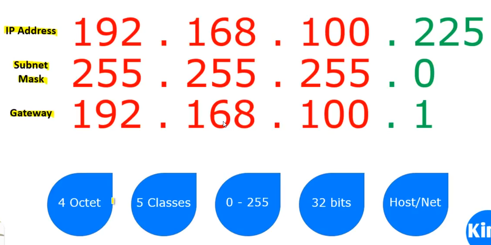
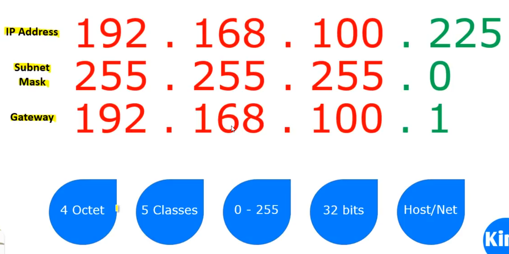

IP Addresses
An Internet Protocol address(IP address) is a numerical label assigned to each device connected to a computer network that uses the Internet Protocol for communication.
If we understand the total number of things on the Earth that may be connected to the Internet we can estimate the number of IP addresses we need.
It serves two main functions:
1) Host or Network interface identification
2) Location Addressing
Que) How to check your IP?- Open Terminal
-
- ifconfig (Linux Distro)
- ipconfig (Windows Distro)
Internet Protocol version 4(IPv4) defines a IP address as a 32-bitdecimal number (4,29,49,67,296 Addresses)
Ex: 10.0.2.15is IPv4
However,because of the growth of the Internet and the depletion of available IPv4 addresses,a new version of IP (IPv6),using 128 bit alphanumeric(3.4028236692093846346337460743177e+38 addresses),was standerdized.
Ex: fe80::a00:27ff:fe2f:4e42is IPv6
IPv4
 


Note:
> IPv4 consist of 4 octet.
>Each octet is8 bit so b=32 bit
>Each octet is in range 0-255
Note:
>Each IP address has two parts namely Network part &Host Part
Que) How to identify Network part & Host Part?
Sol) Check the Subnet mask

Note:
>IP addressesis divided in to classes
Que) How to tell the class of IP address?
Sol) Check the first Octet